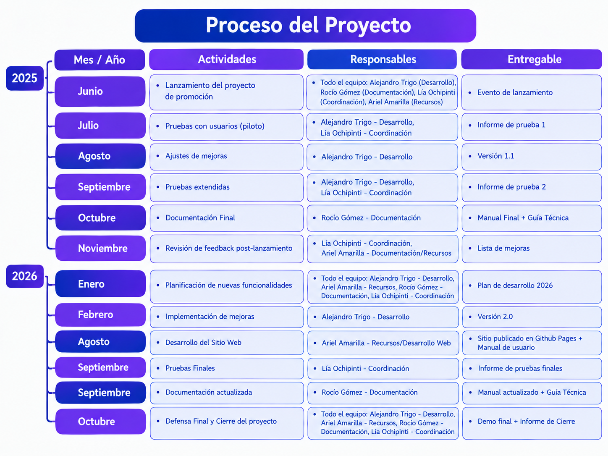
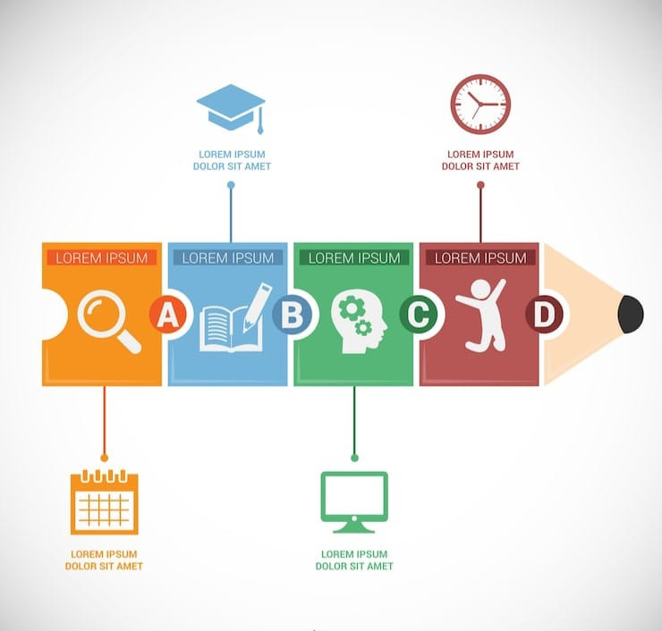
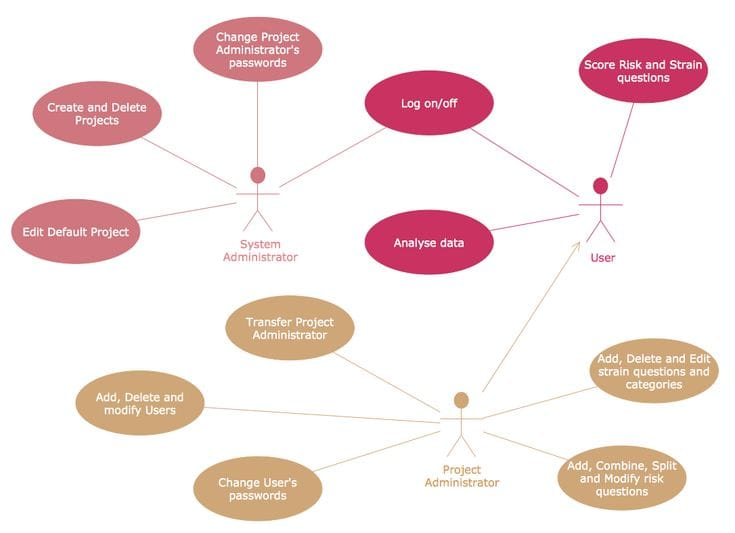
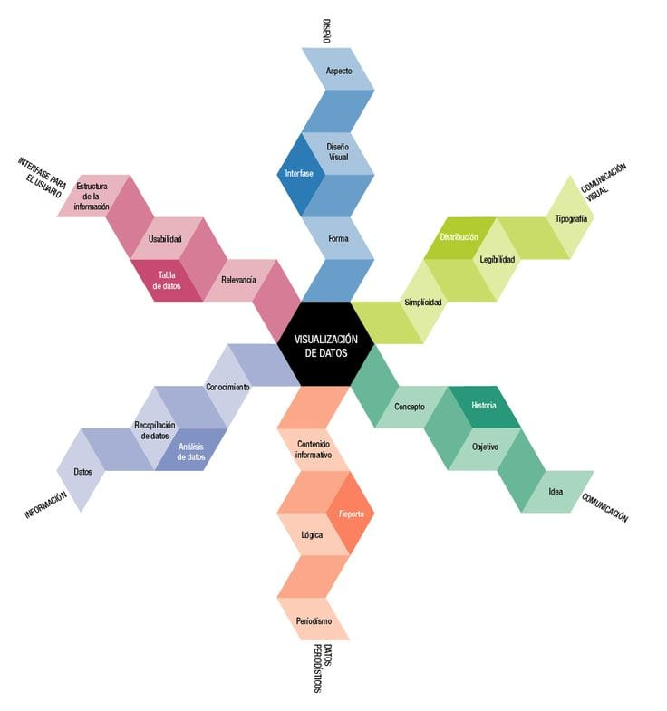

Sistema que usa la cámara para controlar diapositivas con gestos de la mano, sin depender de mouse, teclado ni de otra persona.
Depender del teclado, el mouse u otra persona para manejar una presentación
Docentes y estudiantes
Presentaciones más fluidas y dinámicas
| Año | Qué se hizo | Producto |
|---|---|---|
| 1º | Completar con lo realizado en 1.º año. | Completar |
| 2º | Investigación, diseño, programación en Python, detección de manos, movimiento del cursor y clics por gestos. | Prototipo funcional |
| 3º | Mejoras, pruebas, metodología mixta y finalización de la interfaz de usuario. | Sistema implementado |


Es un tipo de diagrama estructurado en el Lenguaje de Modelado Unificado (UML) que representa gráficamente la estructura y organización del sistema orientado a objetos.

Representación visual que muestra las funciones principales del sistema y cómo los usuarios interactúan con él.

Un Diagrama de Entidad-Relación (DER) es un modelo visual que se utiliza para diseñar y representar la estructura lógica de la base de datos.
Este sistema permite controlar una presentación con gestos de la mano frente a la cámara: mover el cursor y hacer clic sin tocar el mouse ni el teclado.
Computadora con Windows, cámara web, buena iluminación y Python 3.10 o superior.
Descargar el proyecto desde GitHub, instalar las librerías con pip (ver Manual de programación) y ejecutar el archivo principal.
Mejorar la iluminación y mantener la mano completa dentro del cuadro de la cámara.
Acercar bien las yemas de los dedos y mantener la mano en una posición frontal.
Evitar fondos muy cargados y cerrar otros programas que usen la cámara.
Cámara → OpenCV → MediaPipe → reglas de gestos → PyAutoGUI / PyWin32 → sistema. Configuración gesto–acción en base de datos.
Ver sección Diagramas.
Tablas GESTOS, ACCIONES, CONFIGURACIONES y su relación. Ver detalle.
Completar con cada clase y su responsabilidad.
pip install opencv-python mediapipe pyautogui pywin32 psutil, luego ejecutar el archivo principal con Python.
OpenCV (imagen), MediaPipe Hands (puntos de la mano), PyAutoGUI y PyWin32 (control del equipo), Psutil.
Se entregaron las 6 de 6 funcionalidades previstas (cámara, detección de mano, cursor con el índice, clic izquierdo, clic derecho e interfaz de usuario): 100 % del alcance comprometido.
Como retrospectiva, el equipo destaca haber logrado el reconocimiento de gestos y completar la interfaz, y la importancia de probar y revisar durante todo el proceso.
Completar con la reflexión sobre el recorrido de los tres años.